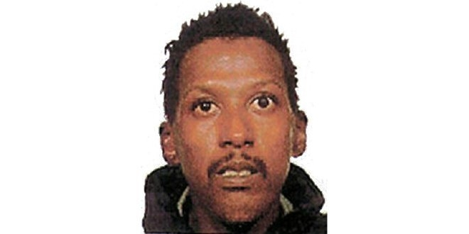
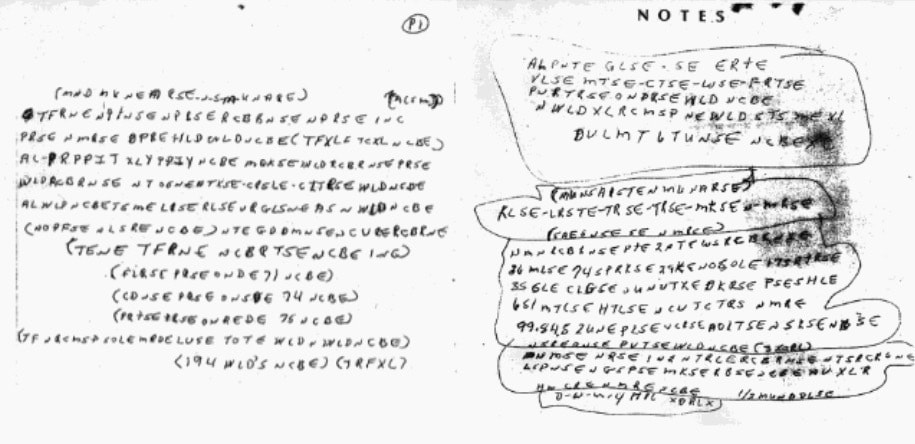
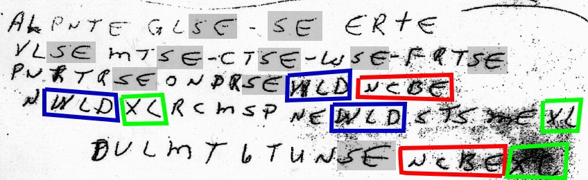

Дело Рикки Маккормика

30 июня 1999 года между кукурузным полем и пустынной дорогой в штате Миссури полиция нашла тело Рикки Маккормика. Как мужчина там оказался, было непонятно: своей машины у погибшего не было, общественный транспорт не ходит, также не удалось найти водителя, который мог подвезти его до поля. При погибшем оказались две записки с беспорядочными символами — буквы, цифры, скобки. Федеральное бюро расследований уверено, что это код и раскрыть дело можно лишь разгадав содержимое. Но лучшие шифровальщики за все время так и не поняли систему, по которой составлены записки. Более того, по словам ряда знавших Рикки людей, он был малограмотным и с трудом умел писать. Как такой человек мог поставить в тупик ФБР? Этого не могут понять уже больше двадцати лет.
Убийство неустановленным способом
Рикки Маккормик жил самой обычной жизнью: мужчина не особо прилежно учился, высшего образования не получил (да и школу не закончил), перебивался редкими подработками, к деньгам и социальному положению не стремился. Он не был женат, но известно, что у него было четверо детей. Знакомые описывали Рикки как не сильно охочего до работы. Еще у него были проблемы с законом — он отсидел 11 месяцев за связь с несовершеннолетними. В 1999 году 41-летний Маккормик работал на заправке. Коллеги видели его в последний раз 27 июня того года. Предположительно, в тот же день Рикки убили.
Спустя три дня полиция обнаружила тело на обочине между полем и дорогой. По некоторым данным, это место хорошо знакомо правоохранителям — безлюдная локация без точек притяжения поблизости была популярным местом преступников, чтобы «избавляться от проблем». Судмедэксперт установит, что смерть наступила трое суток назад, то есть 27 июня. Причем явно вечером или ночью: ведь днем Маккормик работал на заправке и его видели другие сотрудники.
Полиция обратила внимание на адрес проживания Рикки: дом находился примерно в 32 километрах от точки, где нашли тело. Такое расстояние можно пройти и пешком, но цель прогулки непонятна: поблизости ничего нет.
Дальше странных фактов становилось лишь больше. Во-первых, тело было в плохом состоянии из-за начавшегося разложения. Обычно этот процесс занимает больше времени. Внешние факторы едва ли могли повлиять: погода в те дни не была жаркой. Причину смерти судмедэксперт установить не мог — вскрытие и токсикологический анализ не показали ничего необычного. Некоторые полицейские сперва посчитали, что это самоубийство. Но каким способом? Повреждений и травм на теле нет, следов яда не нашли. Постепенно детективы пришли к выводу, что Рикки Маккормика убили. Предстояло выяснить, кто это сделал и каким был мотив.
Полиция установила примерный маршрут передвижений Маккормика в последние две недели его жизни. 15 июня мужчина сел на автобус из Сент-Луиса до Орландо, где на две ночи остановился в бюджетном отеле. 22 июня Маккормик обратился в больницу с жалобами на боль в груди: его приняли в отделение и оставили там до 24-го числа. Днем позже Маккормик вновь обращается в больницу — теперь с жалобами на одышку. Однако в госпитализации ему отказывают. 26 июня он созванивается с подругой Сандрой Джонс — это их последний разговор. На следующий день мужчина выходит на работу, после чего пропадает — находят Маккормика 30-го числа уже мертвым. Что интересно, за три дня мужчину никто не хватился: в полицию не сообщали о пропавшем без вести.
Обращения к врачам за неделю до смерти могут привести к выводу, что мужчина умер от проблем со здоровьем. Но полиция уверена, что Маккормика неким образом убили. Скорее всего, это случилось не на поле — здесь преступник лишь избавился от тела. Следствие практически не продвинулось, весомых зацепок и подозреваемых не было.
Записки
Новый виток последует лишь через двенадцать лет. ФБР неожиданно обратилось к общественности с просьбой помочь в расследовании этого дела. Оказывается, при обыске тела Маккормика в кармане штанов нашли два листка с непонятным набором символов.
Специалисты ФБР из подразделения, которое занимается дешифровкой сообщений, не смогли разгадать содержимое. При этом федералы считают, что именно зашифрованный текст поможет продвинуться в расследовании — других ниточек все равно нет. В ФБР отметили: «Нечасто нам попадается нерешенный шифр такой длины и сложности. Символы неслучайны. К примеру, много „Е“, которые могут использоваться как пробелы». Эту загадку ФБР поставило по сложности следом за посланиями Зодиака — серийного маньяка, который орудовал в 60—70-е годы, его личность до сих пор точно не установлена. Однако даже сообщения этого убийцы удалось частично расшифровать с привлечением общественности. Здесь же — ноль результата.
Помимо сложности с расшифровкой текста, следователи задумались еще над одной проблемой: кто именно оставил эти записки. Маккормик или его убийца? Некоторые следователи склоняются к первому варианту: по крайней мере, если преступник оставил жертве или полиции некое послание, то непонятно, зачем так делать, еще и в столь запутанном виде. Поэтому более логичная версия — Маккормик сам сделал записи. Но тут возникает новый вопрос: сообщения были кому-то предназначены, или же это, условно, список дел, который может прочитать только автор.
Еще один странный момент: почему ФБР молчало 12 лет о записках? Здесь как раз простое объяснение. Раскрывать общественности полный набор улик нелогично: ведь СМИ могут просматривать и преступники, которые поймут, по верному ли следу пошли детективы, и затаятся. Оставлять злоумышленников в неведении — более эффективная тактика.
Версии разные. Результатов нет
Согласно методике ФБР, дешифровка любого сообщения складывается из следующих шагов: определение языка, определение используемой системы (пропуск некоторых символов, смещение всех букв относительно алфавита), создание ключа (понимание, каким образом и что именно было изменено) и восстановление самого текста до понятного всем вида. Теперь следует вернуться к личности Рикки Маккормика: человек даже школу не окончил, но вынудил лучших шифровальщиков ФБР впустую биться над кодом десятки лет. По словам матери Рикки, у него было замедленное развитие, и он мог мыслить совсем не как обычный человек. Возможно, мужчина вообще придумал свой язык, понятный лишь ему, и, исходя из него, составлял записки. В таком случае решить головоломку невозможно: нужно знать не английский, а «маккормикский» язык.